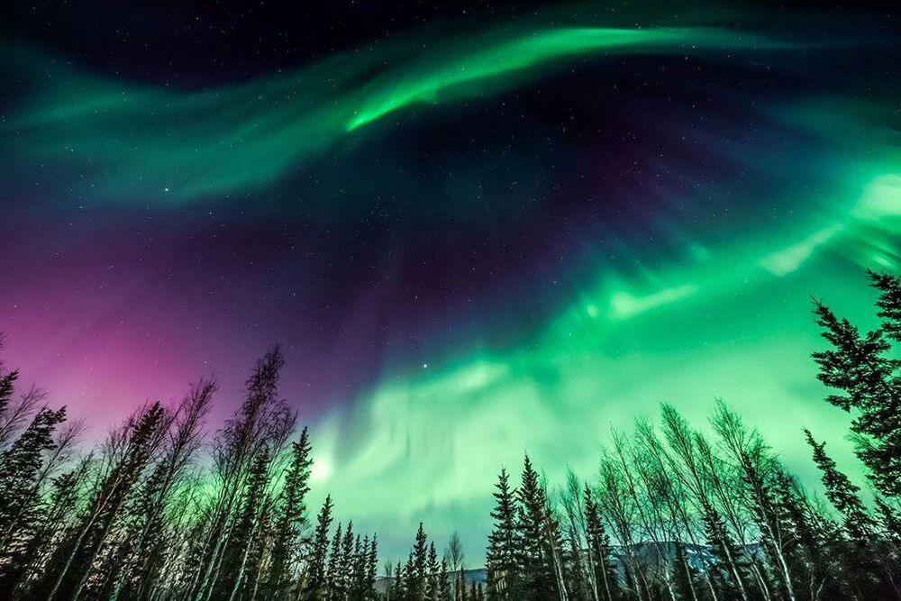

HTML links are defined with the a tag. The link address is specified in the href attribute:
Visit W3SchoolsThis is a paragraph. Üzerine gelindiğpinde yazılan açıklama title="I'm a tooltip" özelliği
Kuzey Işıkları
Kutup ışıkları ya da kutup aurorası, Kuzey ve Güney kutup bölgelerinde gökyüzünde görülen, yeryüzünün manyetik alanı ile Güneş'ten gelen yüklü parçacıkların etkileşimi sonucu ortaya çıkan doğal ışımalardır. Kuzey enlemlerde bu etki aurora borealis veya kuzey ışıkları olarak adlandırılır. Güney enlemlerindeki aurora australis (güney kutup ışıkları) oluşumu da benzer özelliklere sahiptir; ancak Antarktika’da, Güney Amerika’da ve Avustralya’da daha yüksek enlemlerden görülebilir.
